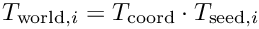

Table of Contents
- General Information
- License
- Installation instructions (including EGSnrc installation)
- Usage
- Test Suite
- The egs_brachy Library
- Documentation
General Information
egs_brachy is an egs++ application for rapid brachytherapy calculations for both photon and electron sources. The current documentation serves as a Technical Reference Manual to complement the egs_brachy user manual (https://clrp-code.github.io/egs_brachy/pdf/egs_brachy_user_manual.pdf) and our initial egs_brachy paper (https://clrp-code.github.io/egs_brachy/pdf/egs_brachy_paper2016.pdf): MJP Chamberland, REP Taylor, DWO Rogers, and RM Thomson, egs_brachy: a versatile and fast Monte Carlo code for brachytherapy, Phys. Med. Biol. 61, 8214-8231 (2016). Please cite this paper when egs_brachy is used in publications.
When using source or eye-plaque models from the distributed geometry library, please also cite the relevant CLRP database papers (see CLRP database references below).
egs_brachy was written by Randle Taylor in collaboration with Marc Chamberland, Dave Rogers, and Rowan Thomson of the Carleton Laboratory for Radiotherapy Physics.
For more information please contact:
- Marc Chamberland (mcham.nosp@m.berl.nosp@m.and@m.nosp@m.ac.c.nosp@m.om) -or-
- Rowan Thomson (rthom.nosp@m.son@.nosp@m.physi.nosp@m.cs.c.nosp@m.arlet.nosp@m.on.c.nosp@m.a) -or-
- Dave Rogers (droge.nosp@m.rs@p.nosp@m.hysic.nosp@m.s.ca.nosp@m.rleto.nosp@m.n.ca)
CLRP also distributes eb_gui, a Qt-based graphical user interface for egs_brachy. eb_gui assists with setting up egs_brachy calculations and provides tools for DICOM conversion and .3ddose analysis. Installation instructions and a user guide (eb_gui_UserGuide.pdf) are in the eb_gui repository.
License
The egs_brachy code (all pieces of code associated with the egs_brachy code system) is copyrighted Rowan Thomson, Dave Rogers, Randle Taylor, and Marc Chamberland. egs_brachy is distributed in the hope that it will be useful, but without any warranty; without even the implied warranty of merchantability or fitness for a particular purpose. egs_brachy is distributed as free software according to the terms of the GNU Affero General Public License as published by the Free Software Foundation, either version 3 of the License, or (at your option), any later version (https://www.gnu.org/licenses/). (See also section 2 of the User Manual for egs_brachy: https://clrp-code.github.io/egs_brachy/pdf/egs_brachy_user_manual.pdf)
Installation instructions (including EGSnrc installation)
git clone https://github.com/clrp-code/EGSnrc_CLRP cd EGSnrc_CLRP
Checkout the most-up-to-date 'egs_brachy' branch and download the egs_brachy user code:
git checkout egs_brachy git submodule update --init --recursive
Finally, configure EGSnrc by following the instructions for your OS (skip Step 2, which is already completed if you’ve been following these instructions):
- Linux: https://github.com/nrc-cnrc/EGSnrc/wiki/Install-EGSnrc-on-Linux
- Mac: https://github.com/nrc-cnrc/EGSnrc/wiki/Install-EGSnrc-on-macOS
- Windows: https://github.com/nrc-cnrc/EGSnrc/wiki/Install-EGSnrc-on-Windows
At this point you should have everything required to run egs_brachy. If you did not choose to compile it when configuring EGSnrc, you should do so now:
cd $EGS_HOME/egs_brachy make
Usage
Run Control
egs_brachy uses the same run control block as other egs++ user codes with the addition of one extra input egsdat file format which you can use to tell egs_brachy to output its egsdat file in gzip format. Using gzip format can result in significantly smaller egsdat file sizes for simulations with a large number of regions defined.
:start run control:
ncase = 10000
nbatch=1
geometry error limit = 10
calculation = first # first or restart or combine or analyze
egsdat file format = gzip # gzip or text
:stop run control:
Detailed descriptions of the standard input options are available in PIRS-898.
Run Modes
There are currently three different run modes available in egs_brachy:
- 'normal' (default): a regular simulation. For an example see eb_tests/seeds_in_xyz/seeds_in_xyz.egsinp.
- 'superposition' : This type of simulation requires the used of an EGS_ASwitchedEnvelope as the simulation geometry. At the start of every history only a single inscribed geometry will be activated. This allows you to explore the effects of intersource attenuation by performing TG-43 dose superposition type calculations. For an example see eb_tests/tg43mode/tg43mode.egsinp.
- 'volume correction only': Just run the volume correction routines, print the results and then quit. No actual dose calculations will be done, so the number of histories specified in the run control input block (ncase) is ignored. For an example see eb_tests/volume_correction/vc.egsinp.
The run mode is set using a 'run mode' input block:
:start run mode:
run mode = normal # 'normal', 'superposition', or 'volume correction only'
:stop run mode:
In simulations with more than a single source, egs_brachy uses the first source as a particle generator. That is, all particles are initiated at the location of the first source and transported until they escape the source geometry. From there, the particle is moved to the location of the next source before transport continues (more accurately, a new particle is added to the top of the stack at the location of the chosen source and the original particle is killed).
This behaviour can be disabled by setting single generator = no in the run mode block (see eb_tests/single_generator/single_generator.egsinp).
:start run mode:
run mode = normal
single generator = no
:stop run mode:
Disabling the single generator (see eb_tests/single_generator/multiple_generator.egsinp) mode may be slightly faster for some simulations (there is an extra call to howfar for every particle escaping the source geometry in single generator mode). Note that in some situations (particle recycling for example) single generator will always be enabled by egs_brachy.
Geometry Specification
In general, arbitrary egs++ geometries can be included in a simulation although, for the sake of efficiency, it is expected that EGS_AEnvelope geometries will be used for most simulations.
There are three egs_brachy specific input keys that are required for the 'geometry definition' input block (in addition to the standard egs++ 'simulation geometry' key):
- 'source geometries' : this key specifies which geometries define the actual brachytherapy source object. This may be a single geometry name (e.g. when using the egs_glib shim to load an externally defined geometry) or a list of all the sub-geometries used to compose a single source geometry when definining geometries inline.
- 'phantom geometries': this tells egs_brachy which geometries to score dose in (1 or more phantom geometries are required). Currently 3 geometry types are allowed to be used as phantoms:
- EGS_XYZGeometry (library egs_ndgeometry, see eb_tests/seeds_in_xyz/seeds_in_xyz.egsinp)
- EGS_RZGeometry (library egs_rz, see eb_tests/stepped_source/stepped.egsinp)
- EGS_cSpheres (library egs_spheres, see eb_tests/scatter/scatter.egsinp)
- 'source envelope geometry': this input is only required for superposition run mode and must name the EGS_ASwitchedEnvelope geometry that contains the sources.
Transformed EGS_XYZGeometry phantoms (i.e., EGS_XYZGeometryT) are allowed, however, the number of voxels in each direction and their bounds are not reported in any of the output due to current limitations in the egs++ geometry library. A warning to that effect is output when a transformed XYZ geometry is used as a phantom in a simulation. Other phantom geometry types could be added in future provided they implement the getBound, getNRegDir, and getMass methods of the EGS_BaseGeometry class.
An (abbreviated) example geometry specification might look like:
:start geometry definition:
# all geometries that are a part of the source
source geometries = planes, end_cap_1, seed_middle, end_cap_2, seed
phantom geometries = phantom
simulation geometry = phantom_w_seeds
# only required for superposition run mode
source envelope geometry = phantom_w_seeds
:start geometry:
name = phantom
library = egs_ndgeometry
type = EGS_XYZGeometry
# rest of geom definition
:stop geometry:
:start geometry:
library = egs_planes
name = planes
# ...
:stop geometry:
:start geometry:
name = end_cap_1
#...
:stop geometry:
:start geometry:
name = seed_middle
#...
:stop geometry:
:start geometry:
name = end_cap_2
#...
:stop geometry:
:start geometry:
library = egs_cdgeometry
name = seed
base geometry = planes
set geometry = 0 end_cap_1
set geometry = 1 seed_middle
set geometry = 2 end_cap_2
:stop geometry:
:start geometry:
library = egs_autoenvelope
name = phantom_w_seeds
base geometry = phantom
:start inscribed geometry:
inscribed geometry name = seed
# rest of auto envelope inscribed geom definition
:stop inscribed geometry:
:stop geometry:
:stop geometry definition:
Detailed descriptions of the egs++ geometry classes are available in PIRS-898, including instructions on how to assign media. Note that vacuum can be assigned to a region by using the egs++ built-in name vacuum.
Using CT data to create phantoms
Using the egs_glib geometry library you can construct an EGS_XYZGeometry using a .egsphant file like so:
:start geometry:
library = egs_glib
type = egsphant
name = my_egsphant_geom
egsphant file = /path/to/some/egsphant/file
density file = /path/to/density/file
:stop geometry:
The egsphant file may either be a typical .egsphant text file or gzipped .egsphant.gz file, and the latter compressed format is often advantageous in terms of memory) The density file indicates to egs_brachy the nominal density of each medium in the egsphant (voxel-by-voxel densities are defined in the egsphant file), and currently egs_brachy can read these data from a (a) material.dat file, (b) pegs4 data file, or (c) a simple text file of the format:
MEDIUM=WATER RHO=1.000 MEDIUM=AIR RHO=1.2E-3
Note the egs_glib geometry library in the main EGSnrc repository does not currently contain support for egsphant files. The egs_glib contained in the egs_brachy git branch is customized to include support for egsphant files.
It is also possible to use the egs_ndgeometry library to contstruct an EGS_XYZGeometry using a .egsphant file like so:
:start geometry:
library = egs_ndgeometry
type = EGS_XYZGeometry
name = my_egsphant_geom
egsphant file = /path/to/some/egsphant/file
ct ramp = /path/to/ramp/file.ramp
:stop geometry:
See the egs_ndgeometry documentation for details about the format of the ct ramp file. Note, however, that the egs_ndgeometry approach assumes that there is no overlap in voxel mass densities for different media in the egsphant, i.e., each medium has a distinct and non-overlapping range of mass densities. This is often not the case for brachytherapy phantoms, and so using the egs_glib geometry with .egsphant files (gzip format) is recommended.
The geometry library
The geometry library (see The Geometry Library below) consists of useful phantom geometries ( lib/geometry/phantoms), source geometries and radioactivity distributions lib/geometry/sources, eye plaques lib/geometry/eye_plaques and sets of transformations lib/geometry/transformations/.
CLRP database references
When using geometries from the distributed library, please cite the relevant CLRP database publications.
Source models (lib/geometry/sources): dose-rate constants and TG-43 parameters are tabulated in the CLRP TG-43 parameter database version 2 papers. Air-kerma strength per history factors are recorded on the # air kerma: line at the top of each source .geom file (see the user manual).
- Low-energy ($^{103}$Pd, $^{125}$I, $^{131}$Cs) sources: Safigholi H, Chamberland MJP, Taylor REP, Allen CH, Martinov MP, Rogers DWO, Thomson RM, Update of the CLRP TG-43 parameter database for low-energy brachytherapy sources, Med. Phys. 47, 4656-4669 (2020). https://doi.org/10.1002/mp.14249 (pdf)
- High-energy ($^{169}$Yb, $^{192}$Ir, $^{137}$Cs, $^{60}$Co) sources: Safigholi H, Chamberland MJP, Taylor REP, Martinov MP, Rogers DWO, Thomson RM, Update of the CLRP Monte Carlo TG-43 parameter database for high-energy brachytherapy sources, Med. Phys. 50, 1928-1941 (2023). https://doi.org/10.1002/mp.16176 (pdf)
Database: https://physics.carleton.ca/clrp/egs_brachy/seed_database_v2
Eye plaques (lib/geometry/eye_plaques):
- Safigholi H, Parsons Z, Deering SG, Thomson RM, Update of the CLRP eye plaque brachytherapy database for photon-emitting sources, Med. Phys. 48, 3373-3383 (2021). https://doi.org/10.1002/mp.14844 (pdf)
Database: https://physics.carleton.ca/clrp/eye_plaque_v2 (DOI http://doi.org/10.22215/clrp/EPv2)
Scoring options
The 'scoring options' input block currently has the following keys:
- 'muen file': path to the file containing the muen data required for the simulation. See the MuenDataParser class for more information about the format of this file.
- 'muen for media': (Optional) a list of the materials that muen data is required for. Dose will be set to 0 for any phantom media that don't have muen data available. (Can be used instead of or in conjunction with muen for medium).
- 'muen for medium': (Optional) one or more input blocks which specify the muen dataset to be used for a given transport medium. (Can be used instead of or in conjunction with muen for media) This allows you to, for example, transport particles in tissue but score in water with notation Dw,m according to the conventions of TG-186.
:start muen for medium:
transport medium = TISSUE
scoring medium = WATER
:stop muen for medium:
- 'score tracklength dose' : (Optional) Controls whether dose using a tracklength estimator is scored in the phantom geometries. The choices are 'yes' (default) or 'no'.
- 'score energy deposition' : (Optional) Controls whether dose from particle interactions is scored in the phantom geometries. The choices are 'yes' or 'no' (default). See eb_tests/brem_cyl/brem_cyl.egsinp for an example
- 'score scatter dose' : (Optional) Controls whether scatter dose (normalized to total radiant energy) is scored in the phantom geometries, as per the primary/scatter dose separation formalism (PSS) of Russel et al.. The choices are 'yes' or 'no' (default). The formalism is intendend for single source characterization. This option should only be used for single source simulations without recycling and with particles initialized within the source (i.e., not from a phase-space source). See eb_tests/scatter/scatter.egsinp for an example.
- 'spectrum scoring': (Optional) zero or more input blocks specifying spectra to score (described below). See eb_tests/spec_absolute/spec_absolute.egsinp, eb_tests/spec_eflu/spec_eflu.egsinp, and eb_tests/spec_vox/spec_vox.egsinp for examples.
- 'phsp scoring': (Optional) zero or one input block specifying whether to score a phase space on the external surface of the source (e.g., on the capsule of brachytherapy seeds). See eb_tests/phsp_scoring/phsp_score.egsinp for an example.
- 'dose file format': (Optional) Controls whether 3dddose files are written as text or gzipped text files. Options are 'text' (default) and 'gzip'.
- 'output egsphant files': (Optional) Controls whether egsphant files are created for scoring phantoms. Options are 'no' (default) and 'yes'.
- 'egsphant file format': (Optional) Controls whether egsphant files are written as text or gzipped text files. Options are 'text' (default) and 'gzip'.
- 'output voxel info files': (Optional) Controls whether voxel info files are created for scoring phantoms. Options are 'no' (default) and 'yes'. See below for a description of these files. See eb_tests/volume_correction/vc.egsinp for an example.
- 'voxel info file format': (Optional) Controls whether voxel info files are written in text (default) or gzip format
- 'output volume correction files for phantoms': (Optional) Controls which phantoms will have volume correction files created.
- 'volume correction file format': (Optional) Controls whether volume correction files are written in text (default) or gzip format
- 'record initial particle positions': (Optional) If this is set to a number N, where N > 0, then the first N initial particle positions will be written to a .pinit file. You can use this file to visualize the initial particle positions using gnuplot for example.
- 'current result phantom region': (Optional) Controls which phantom region is used for displaying results at the end of each batch and/or terminating the calculation if the required statistical uncertainty is reached. Defaults to region 0 of the first phantom object. Currently the result of the tracklength dose scoring is always used. See eb_tests/brem_cyl/brem_cyl.egsinp for an example.
- 'dose scaling factor': (Optional) Allows you to scale all dose files output by egs_brachy by a constant factor.
A sample 'scoring options' block looks like this:
:start scoring options:
score tracklength dose = yes # 'yes' (default) or 'no'
score energy deposition = no # 'no' (default) or 'yes'
score scatter dose = yes # 'no' (default) or 'yes'
muen file = /home/randlet/egs/HEN_HOUSE/muen_data/brachy_xcom_1.5MeV.muendat
muen for media = WATER_0.998, AIR_TG43
dose file format = gzip # text or gzip
output egsphant files = yes
egsphant file format = gzip
output voxel info files = no
voxel info file format = text # text or gzip
output volume correction files for phantoms = phantom1, phantom2
volume correction file format = gzip # text or gzip
current result phantom region = phantom 123 # phant name and reg number
dose scaling factor = 1
:start spectrum scoring:
type = surface count
particle type = photon
minimum energy = 0.001
maximum energy = 0.040
number of bins = 100
output format = xmgr
:stop spectrum scoring:
:start phsp scoring:
phsp output directory = /home/randlet/egs/egsnrc/egs_brachy/
access mode = write
print header = no
kill after scoring = yes
:stop phsp scoring:
:stop scoring options:
Volume correction files
If one or more phantoms are specfied in 'output volume correction files for phantoms' then egs_brachy will output a file containing region numbers and the corrected volumes for any regions which has had its volume corrected.
File mode is specified with the 'volume correction file format' input and can either be 'text' or 'gzip'.
These volume correction files allow you to precompute volume corrections for a given geometry arrangement and can then be used in conjunction with the 'volume correction from file' volume correction option. This can be particularly useful when running a simulation in parallel. A single job in "volume correction only" mode can be run to initially calculate the volume corrections and then the parallel jobs can use the precomputed volume corrections values eliminating the redundant calculation of volume corrections by every job in your parallel run.
The input file eb_tests/volume_correction/vc.egsinp demonstrates this feature.
Note that the initial seeds of the random number generator used for the purpose of volume correction or seed discovery are not automatically incremented between jobs when running in parallel. Thus, each parallel job will calculate the exact same volume corrections because they use the same initial seeeds. This is the expected and desired behavior.
Spectrum Scoring Options
egs_brachy can currently score four different type of spectra:
- Absolute counts of particles escaping the external surface of the source. For brachytherapy seeds distributed with egs_brachy, this corresponds to the encapsulation of the source. (See eb_tests/spec_absolute/spec_absolute.egsinp)
- Energy weighted spectra of particles on the surface of the source (See eb_tests/spec_eflu/spec_eflu.egsinp)
- Photon energy fluence in a single geometry region (See eb_tests/spec_vox/spec_vox.egsinp)
- Photon fluence in a single geometry region.
To score a spectrum, add one or more 'spectrum scoring' input blocks to the 'scoring options' block (you may add an arbitrary number of 'spectrum scoring' blocks.)
Note that for the 'fluence in region' and 'energy fluence in region' spectrum types, it is essential that the scoring region has no other overlapping geometries.
Spectrum scoring input options are explained below.
:start scoring options:
...
:start spectrum scoring:
type = surface count # surface count, energy weighted surface, energy fluence in region, fluence in region
particle type = photon # photon, electron, positron
minimum energy = 0.001 # defaults to 0.001MeV
maximum energy = 1.00 # defaults to max energy of source
number of bins = 1000 # defaults to 100
output format = xmgr # xmgr (default), csv, egsnrc
file extension = my_spectrum # (optional)
# egsnrc 'output format' only
egsnrc format mode = 0 # 0, 1, 2
# 'energy fluence in region' mode only
geometry = your_geom_name
scoring region = 10 # region of specified geometry to score fluence in (defaults to 0 )
:stop spectrum scoring:
:stop scoring options:
Phase Space Scoring Options
egs_brachy has the ability to score an IAEA format phase space file of all particles escaping the source geometry. This phase space can then be used as a particle source in future simulations with the eb_iaeaphsp_source source type (see Phase Space Source section below).
To enable this option you need to add a phsp scoring block to the scoring options input section. The phsp scoring block has the following inputs:
- 'phsp output directory': (Optional) Controls where the .IAEAheader & .IAEAphsp files are written too. Defaults to the current working directory.
- 'access mode': (Optional) Controls whether egs_brachy should write to a new file or append to an existing phsp file. Options are write and append (default).
- 'kill after scoring': (Optional) Controls whether the weight of scored particles should be set to 0 which will increase the speed of phase space file generation. Options are yes and no (default).
- 'boundary step': (Optional) Since egs_brachy scores phsp particles on the surface of a source, you may find that when you use a phsp source, particles get stuck at the geometry boundary when they are initialized. To combat this, before scoring a phsp particle egs_brachy propagates the particle a small distance forward along its current direction of travel before writing it to the phase space file. By default this value is 1E-4 cm but you can make it smaller or larger if necessary.
- 'print header': (Optional) Controls whether the iaea_print_header function is called during the outputResults. Options are yes and no (default).
A complete phsp scoring block looks like:
:start phsp scoring:
phsp output directory = /home/randlet/egs/egsnrc/egs_brachy/
access mode = write
print header = no
kill after scoring = yes
boundary step = 1E-6
:stop phsp scoring:
See eb_tests/phsp_scoring/phsp_score.egsinp for an example of scoring a phase space and eb_tests/phsp_run/phsp_run.egsinp for an example of running a phase space source.
Limitations
Currently phase space generation using parallel runs is not supported.
Source definition
The source definition block for egs_brachy consists of 3 parts:
- a standard egs++ source block which defines what the base particle source and spectrum will be (typically for brachy calculations this will be an isotropic source).
- a transformations input block which contains one or more EGS_AffineTransform input blocks to tell egs_brachy the location of all particle sources (this will usually be identical to the inscribed geometry -> transformations block for an egs_autoenvelope geometry and hence an external file and an include file directive should probably be used.)
- a simulation source input item which is set to the name of the source defined in 1.
- an optional source weights input item which is a list of relative statistical weights for each source. This input is described below in the Variable source weights section.
An example source definition block is shown below for a 6702 seed:
:start source definition:
:start source:
library = egs_isotropic_source
name = 6702_spheres
charge = 0
# three spherical shell sources for 6702 Source
:start shape:
library = egs_shape_collection
:start shape:
library = egs_spherical_shell
inner radius = 0.0299
outer radius = 0.03
midpoint = 0, 0, -0.11
:stop shape:
:start shape:
library = egs_spherical_shell
inner radius = 0.0299
outer radius = 0.03
midpoint = 0, 0, 0
:stop shape:
:start shape:
library = egs_spherical_shell
inner radius = 0.0299
outer radius = 0.03
midpoint = 0, 0, 0.11
:stop shape:
probabilities = 1 1 1
:stop shape:
:start spectrum:
type = tabulated spectrum
spectrum file = /home/randlet/egs/HEN_HOUSE/spectra/I125_TG43.spectrum
:stop spectrum:
:stop source:
:start transformations :
:start transformation:
translation = -2,-2,-2
:stop transformation:
:start transformation:
translation = -2,-2,-1
:stop transformation:
# more transformations...
:stop transformations:
simulation source = 6702_spheres
:stop source definition:
Source coordinate transform
The optional source coordinate transform block maps all source locations from the coordinate system used by the transformations block into the simulation coordinate system. This is useful when source placements are defined in a local frame (for example, seed positions relative to an eye plaque) and a separate transform places the plaque in the simulation.
The block contains exactly one standard egs++ :start transformation: input. At initialization, egs_brachy composes this transform with each entry from transformations so that the world source location is 
An example for an eye plaque simulation is distributed with egs_brachy as COMS16mm-I125-6711-hetero-splitTransforms.egsinp. Local seed placements come from COMS16mm; the shared applicator pose is in COMS16mm_example_pose (referenced from both the outer egs_gtransformed wrapper and source coordinate transform). For setups in which the autoenvelope base geometry is the untransformed plaque, the pose file can instead be COMS16mm_phantom_pose.
:start source definition:
:start source:
library = egs_isotropic_source
name = 6711
...
:stop source:
:start transformations:
include file = lib/geometry/transformations/eye_plaques/COMS16mm
:stop transformations:
:start source coordinate transform:
:start transformation:
include file = lib/geometry/transformations/eye_plaques/COMS16mm_example_pose
:stop transformation:
:stop source coordinate transform:
simulation source = 6711
:stop source definition:
The existing transformations block is unchanged and remains required for backward compatibility. Do not use egs_transformed_source for this workflow; egs_brachy applies source placements from the transformations block after sampling the base source.
The intended workflow uses the same two-level transform structure in both the geometry definition and the source definition. Seed positions relative to an applicator (for example, an eye plaque) are listed once, typically via the same include file in both places. In the geometry block, an egs_autoenvelope inscribes each seed in the applicator using those local transforms. An outer egs_gtransformed wrapper around the autoenvelope assembly then applies the applicator pose in the simulation frame (see COMS16mm-I125-6711-hetero-splitTransforms.egsinp for a worked example). In the source definition, the transformations block lists the same local seed placements, while source coordinate transform carries the same affine transform as the outer egs_gtransformed wrapper. The per-seed geometry inscriptions and the source transformations entries must agree; the outer egs_gtransformed and source coordinate transform blocks must agree with each other.
A regression test in eb_tests/source_coordinate_transform/ verifies that composed transforms reproduce the seeds_in_xyz gold-standard dose. When a coordinate transform is applied, egs_brachy reports it under egs_brachy Source Information in the run log.
Checking for overlapping sources
egs_brachy can optionally run a Monte Carlo calculation (similar to volume correction routines) to try to determine if any sources are overlapping. To run this check at the beginning of your simulation add a source overlap check input block to the the source definition section.
A sample source overlap check block looks like:
\startverbatim
:start source overlap check:
check source overlaps = yes # yes or no (default)
warning mode = fatal # fatal (default) or warning.
# fatal kills the simulation, warning allows it to continue but prints a warning
density of random points (cm^-3) = 1E6 # density of points to use for checking for overlap
# bounding shape to use for generating random points around source
:start shape:
type = cylinder
radius = 0.04
height = 0.46
:stop shape:
:stop source overlap check:
Variable source weighting
In order to simulate sources with different activity levels you can add a source weights input to the source definition section. For example, if you have a simualtion with two sources, the first of which has three times the activity of the second, you would set the following source input:
:start source definition:
:start source:
library = egs_point_source
name = pt_source
charge = 0
position = 0 0 0
:start spectrum:
type = tabulated spectrum
spectrum file = /home/randlet/egs/HEN_HOUSE/spectra/I125_TG43.spectrum
:stop spectrum:
:stop source:
:start transformations :
:start transformation:
translation = 0 0 -1
:stop transformation:
:start transformation:
translation = 0 0 1
:stop transformation:
:stop transformations:
simulation source = pt_source
source weights = 3 1 # give source at (0, 0, -1) three times the weight of source 2
:stop source definition:
egs_brachy uses these weights to assign the initial statistical weight of the particles originating in a source. If the source weights input is missing all sources are given equal weighting. If the number of inputs for source weights is less than the number of sources, the missing inputs will be assumed to be 1. See eb_tests/variable_activity/variable.egsinp for an example.
When the superposition run mode is used, the source weights input represents relative dwell times (e.g. for a stepped Ir192 HDR source) rather than different activity levels. See eb_tests/stepped_source/stepped.egsinp for an example of this feature.
Phase Space Sources
Using an IAEA phase space source in egs_brachy is just a matter of setting the source input block to use the eb_iaeaphsp_source type like so:
:start source definition:
:start source:
library = eb_iaeaphsp_source
name = 6702
header file = /home/randlet/egs/egsnrc/egs_brachy/iaea.phsp.IAEAheader
:stop source:
:start transformations :
include file = lib/geometry/transformations/125seeds_1cm_grid
:stop transformations:
simulation source = 6702
:stop source definition:
See the eb_iaeaphsp_source documenation for more information on the inputs and eb_tests/phsp_run/phsp_run.egsinp input file for an example of this feature.
It should be noted that phase space sources are treated slightly differently than other source types when particle recycling is enabled. This is discussed below in the particle recycling section.
Transport Parameters
egs_brachy has a couple of extra optional transport parameters.
- Fluorescent Photon Cutoff which will kill all fluorescent photons with energy less than or equal to the cutoff energy.
:start MC transport parameter: Global ECUT = 1.512 Global PCUT = 0.001 # ... Fluorescent Photon Cutoff = 0.005 # kill all flu. photons with E <= 5keV :stop MC transport parameter: - Source ECUT & Source PCUT these two transport parameters allow you to set ECUT and PCUT to different values within the source compared to elsewhere. This is required for x-ray source simulations (see e.g. eb_tests/brem_cyl/brem_cyl.egsinp).
:start MC transport parameter:
Global ECUT = 1.512
Global PCUT = 0.001
Source ECUT = 0.512
Source PCUT = 0.001
:stop MC transport parameter:
Variance Reduction
Particle Recycling
egs_brachy has the ability to reuse particles which escape from the source geometry an arbitrary number of times. With particle recycling enabled, egs_brachy detects (in ausgab) when a particle is escaping the source, and then adds Nrecycle new particles to the top of the stack at the location of each source in the simulation.
This can increase the efficiency of a simulation where only a fraction of particles are escaping the source geometry (since particles which don't escape the source geometry are 'wasted' because they don't contribute to dose in the phantom).
In order to enable source particle recycling you must include a particle recycling block in the variance reduction block.
:start variance reduction:
:start particle recycling:
times to reuse recycled particles = 10
rotate recycled particles = yes
:stop particle recycling:
:stop variance reduction:
If rotate recycled particles is set to yes, each particle will be rotated by an arbitrary angle about the z-axis prior to being reused. (If times to reuse recycled particles is greater than 1, particle rotation is enforced).
Examples of particle recycling may be seen in the following test files: eb_tests/phsp_run/phsp_run.egsinp, eb_tests/recycling/recycling.egsinp, eb_tests/tg43mode_recycle/tg43mode_recycling.egsinp, eb_tests/variable_w_recycling/variable_w_recycling.egsinp.
Particle Recycling with PHSP Sources
Phase space particles are scored once they've already escaped the source and therefore particles from a phsp source will be initiated outside of sources. Because of this phsp particles never escape the source and trigger the recycling routines in ausgab. Instead, at the beginning of each history a single particle is retrieved from the phase space file and then NRecycle copies of the particle are made and placed at the location of all the sources (so the history starts with NRecyle*NSource particles on the stack rather than just a single particle).
Particle Recycling and Superposition Mode
Currently when running in superposition mode recycled particles are only generated for the currently active source rather than all source locations ( i.e. when a particle escapes a source only Nrecycle particles are created rather than Nrecycle*Nsource).
Range Rejection
Range rejection is enabled outside of sources and disabled within sources by default in egs_brachy. The default maximum range rejection energy is set to 2.511 MeV (including rest mass). In other words, by default range rejection is applied to electrons in the phantom with kinetic energy lower than 2 MeV. To enable or disable range rejection within sources, or outside of sources, use the source range rejection and global range rejection inputs, respectively.
The source range rejection max energy and global range rejection max energy inputs are used to set the maximum energy of electrons (in MeV, including rest mass) to use range rejection with.
:start variance reduction:
global range rejection = yes
global range rejection max energy = 0.611
source range rejection = yes
source range rejection max energy = 0.516
:stop variance reduction:
Bremsstrahlung Splitting
To enable brem splitting in egs_brachy set the split brems photons input to something greater than 1 in the variance reduction block.
:start variance reduction:
split brem photons = 100
:stop variance reduction:
See eb_tests/brem_cyl/brem_cyl.egsinp for an input file that uses brem splitting.
Bremsstrahlung Cross Section Enhancement
To enable bremsstrahlung cross section enhancement in egs_brachy add a bcse medium input item in the variance reduction block. The format of the input is medium_name enhancement_factor.
:start variance reduction:
split brem photons = 100
bcse medium = Ti10W90 100
:stop variance reduction:
Voxel volume correction details
egs_brachy has three methods available for doing voxel volume correction calculations in rectilinear, cylindrical and spherical geometries. There is a 'fast' method that uses the same technique described in the egs_autoenvelope documentation and a more general purpose routine which can be used for larger volumes with multiple overlapping phantom geometries. In addition to those two methods, corrected voxel volumes can be precomputed (either manually or by egs_brachy) and read from a file. Finally, there is a fourth method, phantom region volumes that can be used to specify manually calcualted voxel volumes in the input file for other geometry types (e.g. conical geometries).
See eb_tests/volume_correction/vc.egsinp for examples of the fast & general volume correction methods.
Total coverage threshold
Volume correction uses Monte Carlo sampling to estimate how much of each phantom voxel remains available for dose scoring after subtracting overlapping geometry (sources, applicators, etc.). For voxels that are almost entirely occupied, the tiny uncorrected volume that remains can produce dose values with very large statistical uncertainties.
The optional input total coverage threshold % controls when a voxel is treated as fully covered and its corrected volume set to zero (so no dose is scored there). If the estimated uncorrected fraction of the nominal voxel volume is at most (100 - threshold) percent, the voxel is zeroed. With the default 99.9, voxels with 0.1% or less of their nominal volume remaining are zeroed; with 98, voxels with 2% or less remaining are zeroed. A lower threshold is sometimes used for complex applicators such as eye plaques, where slightly more aggressive zeroing avoids unreliable dose in thin voxels at geometry boundaries.
This input may appear in either :start source volume correction: or :start extra volume correction: blocks. Values may be given as a percentage (99.9, 98) or as a fraction between 0 and 1. If omitted, egs_brachy uses 99.9%.
See vc.egsinp for a test input with a non-default threshold on an extra volume correction block, and the eye-plaque template BEBIG16mm-hetero-I125-S06_3rdSeedActive-.egsinp for a clinical geometry example using 98.
:start volume correction:
:start extra volume correction:
correction type = correct
density of random points (cm^-3) = 1E8
total coverage threshold % = 98 # zero voxels with <= 2% uncorrected volume
:start shape:
type = box
box size = 4
:stop shape:
:stop extra volume correction:
:stop volume correction:
Fast voxel volume corrections for sources
The input block for this type of volume correction looks like:
:start volume correction:
:start source volume correction:
correction type = correct # optional: none(default), correct, zero dose
density of random points (cm^-3) = 1E7 # optional random point sampling density defaults to 1E8
total coverage threshold % = 99.9 # optional level of voxel coverage before it is considered totally covered
# if a voxel is more than 99.9% (default) covered then it's volume is set to 0
# shape which encompasses source
:start shape:
type = cylinder
radius = 0.04
height = 0.45
:stop shape:
# optional rng definition
:start rng definition:
type = sobol
initial seed = 1234
:stop rng definition:
# -or- #
:start rng definition:
type = ranmar
initial seeds = two integers
:stop rng definition:
:stop source volume correction:
:stop volume correction:
General purpose volume corrections
The general purpose algorithm is similar, except any geometry region within the bounding shape will have its region volume corrected Currently the shape must be cylinder, sphere, or box type.
The input block for the general purpose volume corrections is shown below:
:start volume correction:
:start extra volume correction:
correction type = correct # correct, none, zero dose
density of random points (cm^-3) = 1E5
total coverage threshold % = 98 # optional; see #coverthresh (default 99.9)
# correct volume of region for all geometries within
# x,y,z = +/- 2cm around origin
:start shape:
type = box
box size = 4
:start transformation:
translation = 0 0 0
:stop transformation:
:stop shape:
:stop extra volume correction:
:stop volume correction:
Volume calculations from file
You can also use precomputed volume corrections by using a 'volume correction from file' input.
The input block specifies one or more 'phantom file' inputs with two strings. The first string is the name of the phantom to set the volumes for and the second string is the file to read the volumes from. egs_brachy will automatically determine whether the file is in text or gzip mode.
:start volume correction:
:start volume correction from file:
phantom file = phantom1 your_precomputed_phantom1_volumes.volcor
phantom file = phantom2 your_precomputed_phantom2_volumes.volcor
:stop volume correction from file:
:stop volume correction:
To create your own volcor text files, create a text file in the format:
NRECORDS REG_NUM_1 REG_1_VOLUME REG_NUM_2 REG_2_VOLUME ... REG_NUM_3 REG_3_VOLUME
for example the following file:
3 5 0.5 13 1.0 1000 2.5
would set regions 5, 13 and 1000 to volumes 0.5 cm^3, 1 cm^3, 2.5 cm^3 of whichever phantom it was assigned to.
Random Number Generator for volume corrections
If a box shape is used as the volume correction shape, volume corrections will use a Sobol Quasi Random Number Generator by default. For all other shapes the regular Ranmar RNG will be used (the Sobol generator only works for Cartesian coordinate systems). The RNG can be overridden as show in the example above.
Manually specifying voxel volumes
For calculating dose in phantoms which are not rectilinear, cylindrical, or spherical you may use phantom region volumes blocks to specify the the volume of one or more regions in a phantom (note, it will also work in e.g. rectilinear phantoms, it's just not generally needed). The format of these blocks is:
:start volume correction:
:start phantom region volumes:
phantom name = <phantom_name>
region numbers = r_1 r_2 ... r_i ... r_N
region volumes = V_1 V_2 ... V_i ... V_N
:stop phantom region volumes:
:stop volume correction:
for example to specify volumes of 0.5cm^3 and 1cm^3 for regions 1 and 3 respectively in a phantom called my_phantom you would do:
:start volume correction:
:start phantom region volumes:
phantom name = my_phantom
region numbers = 1 3
region volumes = 0.5 1
:stop phantom region volumes:
:stop volume correction:
if you try to calculate dose in a geometry type that doesn't support automatic volume calculations without including a phantom region volumes block, egs_brachy will print a warning and terminate.
Output files
3ddose files
A 3ddose file will be output for every phantom geometry named in the geometry definition -> phantom geometries input item. The filename format of these 3ddose files is {input_file}_{phantom_name}.3ddose where {input_file} is replaced with the name of the simulations input file and {phantom_name} is replaced with the name of the phantom.
If score energy deposition = yes is set, a second 3ddose file with dose from interaction scoring will be output to {input_file}_{phantom_name}.edep.3ddose as well.
The 3ddose file format is described in section 6.2 of the egs_brachy manual. By default, the doses are reported in units of Gray per history (Gy/hist). If a dose scaling factor is provided within the egsinp file to convert the results to absolute dose as per section 7.4.2 of the egs_brachy manual, then the units of the doses will simply be Gy.
If score scatter dose is enabled, egs_brachy will score primary, single scattered and multiple scattered dose (normalized to total radiant energy) and output them to 3ddose files with the format {input_file}_{phantom_name}.{pr,ss,ms,to}.3ddose The units of the doses are Gray per radiant energy (Gy/R) or simply inverse grams (g^-1).
Note that for voxels with volume corrections, the uncertainty in the 3ddose file represents the total uncertainty of the calculation which is the error on the dose calculation added in quadrature to the error on the volume correction calculation.
egsphant file
If the user sets output egsphant files to yes in the scoring options input block, an egsphant file will be output for each scoring phantom in the simulation.
:start scoring options:
#...
output egsphant files = yes
:stop scoring options:
Voxel info files
If the user sets output voxel info files to yes in the scoring options input block, a file with a .voxels extension ({input_file}_{phantom_name}.voxels) will be output that contains region by region information about every voxel in a phantom. The information currently includes, region #, corrected volume, uncorrected volume, mass, density, medium, dose and uncertainy.
:start scoring options:
#...
output voxel info files = yes
:stop scoring options:
Running a simulation
egs_brachy uses the standard egs++ run control input block to control the number of histories, batches, geometry erorr limits etc.. Likewise the standard methods of running EGSnrc user codes from the command line all apply to egs_brachy (i.e. use ex, exb or egs_brachy -i input_file [-p pegs_file] [-o output_file] [-s] [-P n -j i])
egs_view and particle tracks
Simulation geometries and particles tracks can be viewed using the egs_view application distributed with EGSnrc. A brief overview of egs_view is available in PIRS-898. Instructions to generate and visualize particle tracks are available in the Getting Started with EGSnrc guide.
Test Suite
egs_brachy comes with a test suite that will allow you to confirm the code is still performing as expected after making modifications or updating the egsnrc version.
Geometries required for the tests are either defined within the .egsinp files or within eb_tests/test_geoms.
Setup
In order to make accurate CPU time comparisons the test suite needs to know how fast your CPU is. If you are on a linux system that makes processor speed available in /proc/cpuinfo/ then the test suite can likely determine this information on its own. Otherwise you will need to set a CPU_MHZ environment variable with the value of your CPU speed in MHz (e.g. CPU_MHZ=2400).
Running the test suite
To run the test suite you need to be in the root egs_brachy directory. To run the whole test suite type (tested with Python 2.7 & 3.4):
python run_tests.py
after which you should see output like:
~/egs/egsnrc/egs_brachy$ python run_tests.py CPU speed read from /proc/cpuinfo as 3498.557000 MHz Running test 'tests.volume_correction'... PASS - tests.volume_correction - ran in 5.72E-05 s/MHz (0.2 s) Running test 'tests.scatter'... PASS - tests.scatter - ran in 0.0056 s/MHz (19.6 s) Running test 'tests.seeds_in_xyz'... ... Running test 'tests.spec_vox'... PASS - tests.spec_vox - ran in 0.000829 s/MHz (2.9 s) ================================================================================ Tests finished 17/17 passed ~/egs/egsnrc/egs_brachy$
You can also run a subset of the tests in the following way:
~/egs/egsnrc/egs_brachy$ python run_tests.py eb_tests/seeds_in_xyz/ CPU speed read from /proc/cpuinfo as 3498.557000 MHz Running test 'tests.seeds_in_xyz'... PASS - tests.seeds_in_xyz - ran in 0.00269 s/MHz (9.4 s) ================================================================================ Tests finished 1/1 passed ~/egs/egsnrc/egs_brachy$
or
~/egs/egsnrc/egs_brachy$ python run_tests.py "eb_tests/spec*" CPU speed read from /proc/cpuinfo as 3498.557000 MHz Running test 'tests.spec_eflu'... PASS - tests.spec_eflu - ran in 0.000629 s/MHz (2.2 s) Running test 'tests.spec_absolute'... PASS - tests.spec_absolute - ran in 0.000629 s/MHz (2.2 s) Running test 'tests.spec_vox'... PASS - tests.spec_vox - ran in 0.000743 s/MHz (2.6 s) ================================================================================ Tests finished 3/3 passed ~/egs/egsnrc/egs_brachy$
A list of the current tests
A list of all the tests currently implemented can be found in the egs_brachy tests page.
The egs_brachy Library
The Geometry Library
For a list of the current geometry objects available in the egs_brachy library, please see the geometry library page.
Transport Parameters
For a list of the current default transport parameter files available in the egs_brachy library, please see the transport parameters page.
Spectra
For a list of the current spectra available in the egs_brachy library, please see the spectra page.
Media & Muen Data
egs_brachy includes material files for pegsless runs and muen data for scoring dose in different media using the tracklength estimator. For a list of the current media available see here.
Example egsinp files
A suite of input files is distributed with egs_brachy (found in lib/examples). These provide a good starting point for users new to egs_brachy.
Documentation
This egs_brachy Technical Reference Manual uses doxygen and Python to build its documentation. Documentation for the egs_brachy library and test suite are generated by a number of Python scripts located in the _docs directory. The Python scripts generate markdown documents based on the contents of the lib and eb_tests directory. These markdown documents are then compiled to html by doxygen.
This document (egs_brachy.md) and the scripts for generating the library and test documents are located in _docs/ and the generated html is placed in docs/ ( the documents in the docs/ directory should not be modified manually).
To update the documentation simply run make docs and then commit the changes:
Generated by